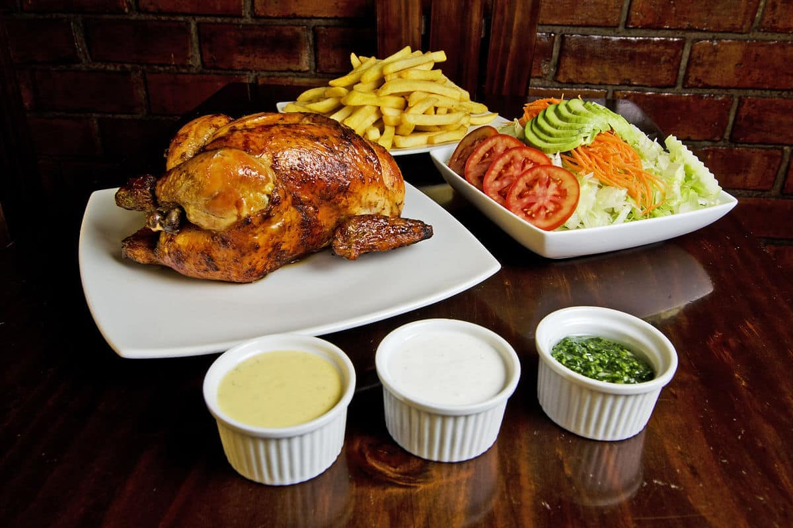

Pollo a la Brasa

Description
Pollo a la brasa is a popular Peruvian dish consisting of crunchy and juicy charcoal-grilled chicken that is traditionally served with French fries and salads. Today, it is one of the most consumed meals in Peru, so much that 27 million Peruvians eat it daily.
The dish was first invented in Lima in the 1950s, when it was seasoned only with salt, but nowadays the chicken is often marinated in a special combination of ingredients, usually consisting of vinegar, salt, pepper, rosemary, chili, and dark beer.
Ingredients
- 1 whole chicken, 2.5-3.5 lbs, washed
- ½ tablespoon rosemary
- 1 tablespoon salt
- 1 teaspoon cumin
- 1 tablespoon soy sauce
- ½ teaspoon ground pepper
- ¼ cup dark beer
- 2 tablespoons white vinegar
- 2 tablespoons garlic paste
- ½ tablespoon ground ají panca (may substitute paprika)
Steps
- Place chicken, breast side down, on a cutting board. Starting from the neck end, use kitchen shears to make a lengthwise cut down one side of the backbone. Repeat to cut lengthwise on the opposite side of the backbone. Remove and discard the backbone. Turn chicken, skin side up, and press down between the breast pieces to break the breast bone. Flatten the chicken as much as possible with your hands. Use kitchen shears to remove the wing tips. Place chicken in a 2-gallon resealable plastic bag set in a deep pot or dish.
- For brine, in a large bowl whisk together 1 cup of the water and the 2 tablespoons kosher salt, whisking until salt dissolves. Add the remaining 1 cup water, the beer, soy sauce, honey, and garlic. Stir to combine. Pour over chicken in the bag. Seal bag.
- Brine in the refrigerator for 8 to 24 hours. Remove chicken from brine; discard brine.
- Preheat oven to 375°F. For the rub, in a small bowl combine chili powder, paprika, the 1/2 teaspoon kosher salt, the cumin, oregano, and 1/4 teaspoon pepper.
- Use your hands to loosen the skin over the breast pieces and thighs of the chicken. Using your fingers, rub the rub mixture under the skin, on top of the skin, and on the underside of the chicken. Place chicken, breast side up, on a rack in a shallow roasting pan. Roast chicken about 1 hour or until chicken is done (at least 170°F in thigh). Remove from oven. Cover loosely with foil; let stand for 15 minutes before cutting into quarters.
- Meanwhile, in a large saucepan combine potatoes and enough water to cover by 2 inches. Add the 1 teaspoon kosher salt to the water. Bring to boiling; reduce heat. Simmer, uncovered, for 15 to 20 minutes or until potatoes are tender. Drain potatoes.
- Cool potatoes slightly. Using a potato masher or the bottom of a heavy glass, lightly press down on each potato to smash to about 1/2-inch thickness, keeping each potato in one piece. Drizzle with the olive oil; sprinkle with the 1/4 teaspoon kosher salt and 1/4 teaspoon black pepper.
- While the chicken is resting, increase the oven temperature to 450°F. Transfer smashed potatoes to the roasting pan; if desired, add green onions to roasting pan. Roast for 10 to 15 minutes or until potatoes are golden brown and crisp and green onions are tender, turning once. (Remove green onions before potatoes if they are overbrowning.)
- Serve chicken with potatoes and green onions, if using. If desired, serve with Aji Sauce